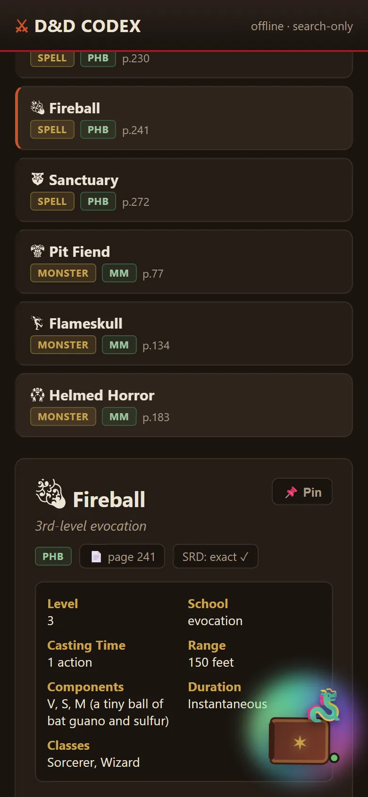
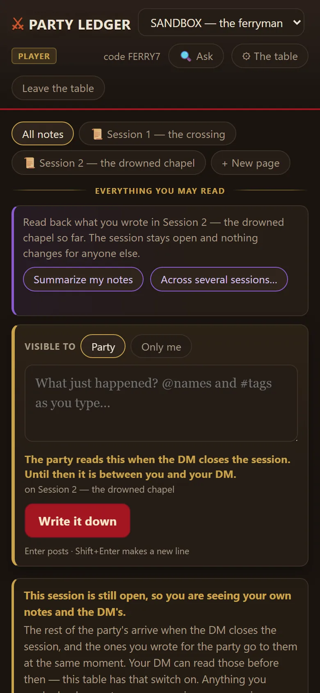
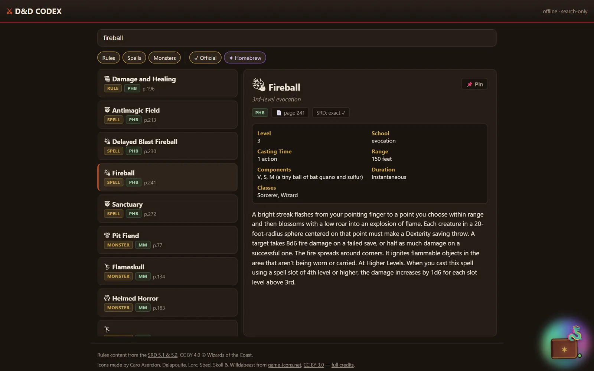
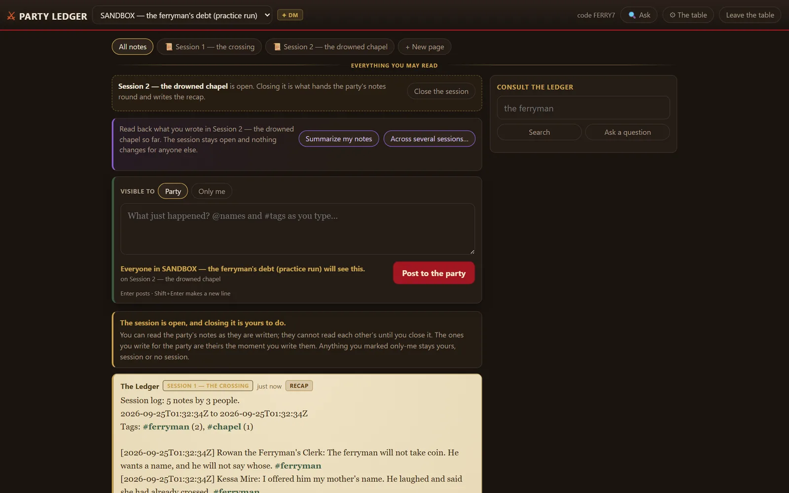

For the table on game night.
My friends and I play Dungeons & Dragons. Two things kept slowing the table down: flipping through a stack of rulebooks for one spell, and nobody remembering what happened two sessions ago. So there are two apps.



The Codex: every rule, one search box
All 361 spells from the Player's Handbook and 427 monsters from the Monster Manual, plus conditions and combat rules. Each entry is tagged with its book and page, so an argument ends in one tap.
Getting the data out was the real project. The books are PDFs with columns, sidebars and stat blocks, and standard text extraction scrambles them. I built a pipeline that reads each page in bands, uses text recognition where it has to, and checks each result against rules for what a valid spell or monster entry looks like.
Anything it isn't sure about carries a flag, and 56 of those are waiting for me to check against the physical book.

The Ledger: a shared logbook that keeps secrets
During a session, everyone jots notes on their phone. But the players' notes stay hidden from each other until the Dungeon Master closes the session. At that moment they're all released at once, and the ledger writes a recap. A note marked "only me" stays private forever.
The first version was a live feed. After a player reviewed it, it was redesigned into a logbook, and releasing everything when the session closes turned out to be the heart of it.
Under the hood
- Codex: a PDF-to-data pipeline (PyMuPDF plus OCR for the hard pages) with "oracles", small checks that know what a valid spell or stat block looks like and flag anything that doesn't. The app itself works fully offline.
- Ledger: Python, SQLite, and a phone-friendly web page. Players join with a short code that's easy to say out loud (no 0/O or 1/I), with privacy per note and per session.
- Search that works with no AI. Asking the ledger "what did the ferryman want?" gives cited answers from the notes. If the local AI model is available it writes a nicer answer, and if it isn't, you still get the search results.
- It runs on a small home server and is reachable from anyone's phone, with no app to install.
The names on these screens are the sandbox's made-up party: Rowan, Kessa and Thorin.